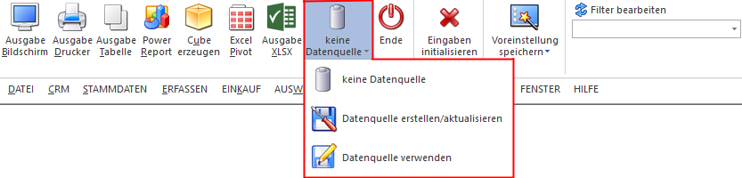
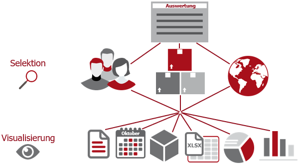
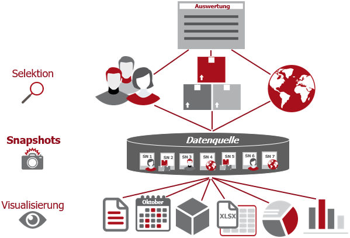
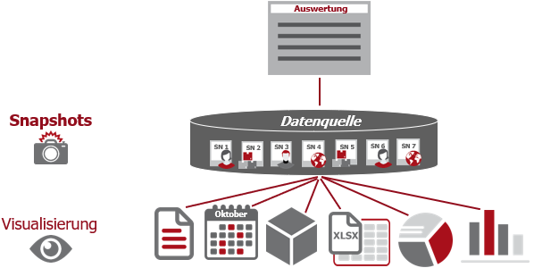

Ob mit einer Datenquelle (Snapshot, View oder MasterView) gearbeitet werden soll, wird über den "Datenquellen"-Button in der jeweiligen Auswertung festgelegt.

ü keine Datenquelle
Bei Auswahl
von "keine Datenquelle" wird keine zuvor angelegte Datenquelle genutzt. D.h. die
Daten werden von der WinLine "live" ermittelt und in der gewünschten Form
ausgegeben.
Hinweis
Da die BI-Ausgabe (z.B. Cube oder Power Report) immer eine Datenquelle benötigt, wird im Hintergrund eine temporäre Datenquelle (Snapshot) gebildet.
Beispiel

ü Datenquelle
erstellen/aktualisieren (Snapshot)
Die Daten werden zur Laufzeit ermittelt
und an einen zu definierenden Snapshot übergeben. Nach dem Füllen der
Datenquelle wird die gewünschte Ausgabevariante über die Datenquelle erzeugt.
Dieser Vorgang kann mit einer Zeitverzögerung verbunden sein, da die Daten
zusätzlich gespeichert werden müssen.
Beispiel

ü Datenquelle
erstellen/aktualisieren (View)
Im Gegensatz zum Arbeiten mit einem Snapshot
wird eine View, d.h. eine Sicht auf die gewünschten Daten, erzeugt. Eine View
liefert somit immer aktuelle Daten, was mit einem Zeitaufwand verbunden ist.
Hinweis
Bei dem Aktualisieren einer View wird nur die Sicht aktualisiert, z.B. mit neuen Selektionskriterien versehen.
ü Datenquelle verwenden
(Snapshot)
Die Daten werden direkt aus einem auszuwählenden Snapshot gelesen,
d.h. die für die Ausgabe erforderlichen Daten können ohne Verzögerung in der
gewünschten Varianten ausgegeben werden.
Beispiel

ü Datenquelle verwenden (View bzw.
MasterView)
Bei Nutzung einer View werden die Daten der Ausgabe "live"
ermittelt. Wird hingegen eine MasterView verwendet, so sind die Daten so
aktuell, wie die zu Grunde liegenden Datenquellen.